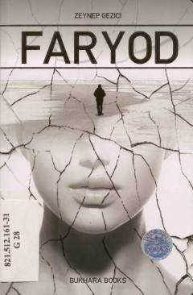

FOg'ir kasallikka qarshi kurashayotgan insonning hayotga bo'lgan umidlari haqidagi ta'sirli roman.
Ushbu asarda hayot sinovlari va og'ir kasallikni boshdan kechirayotgan ikki insonning taqdiri kesishishi haqida hikoya qilinadi. Muallif hayot faqat qora va oq rangdan iborat emasligini, har qanday vaziyatda ham umidni saqlab qolish kerakligini ta'sirli tarzda ochib beradi.